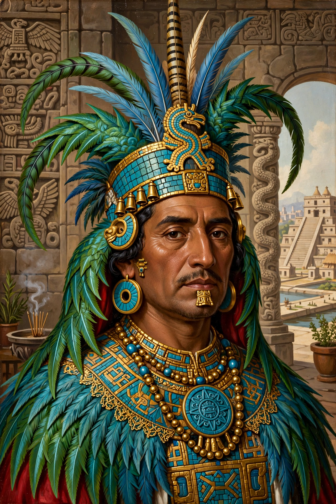

Moctezuma II (c. 1466 – 29 June 1520), also spelled Montezuma, was the ninth tlatoani (ruler) of Tenochtitlan and the Aztec Empire, reigning from 1502/1503 until his death during the Spanish conquest under Hernán Cortés. Under him the empire reached its greatest extent.

| Moctezuma II | |
|---|---|
| Reign | 1502/1503–1520 |
| Predecessor | Ahuitzotl |
| Successor | Cuitláhuac |
| Died | 29 June 1520, Tenochtitlan |
Moctezuma centralised power, expanded tribute, and waged flower wars. In November 1519 he received Cortés in Tenochtitlan; the Spanish soon seized him in his own palace and ruled through him. During the Toxcatl massacre and the ensuing uprising, Moctezuma died — Spanish accounts say he was stoned by his own people while addressing them; Mexica accounts say the Spanish killed him. He was succeeded briefly by Cuitláhuac, then Cuauhtémoc.